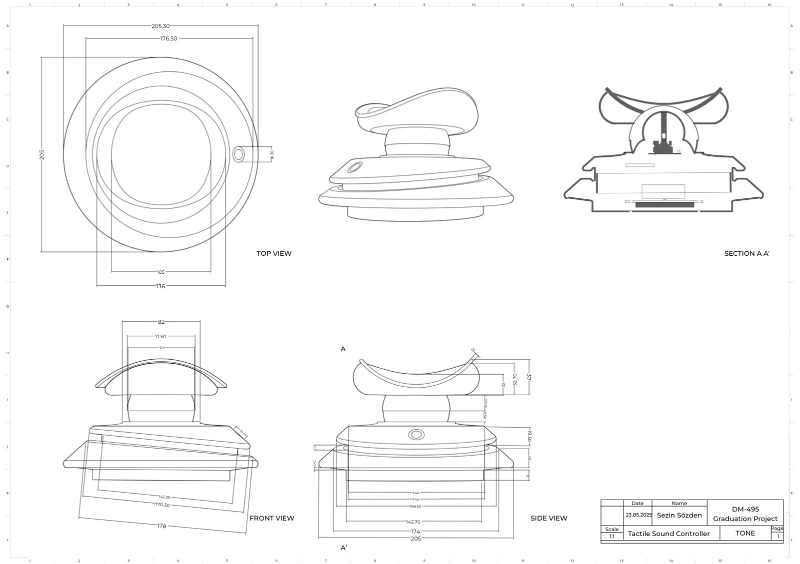
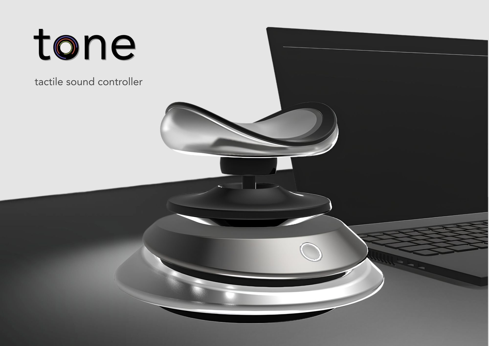
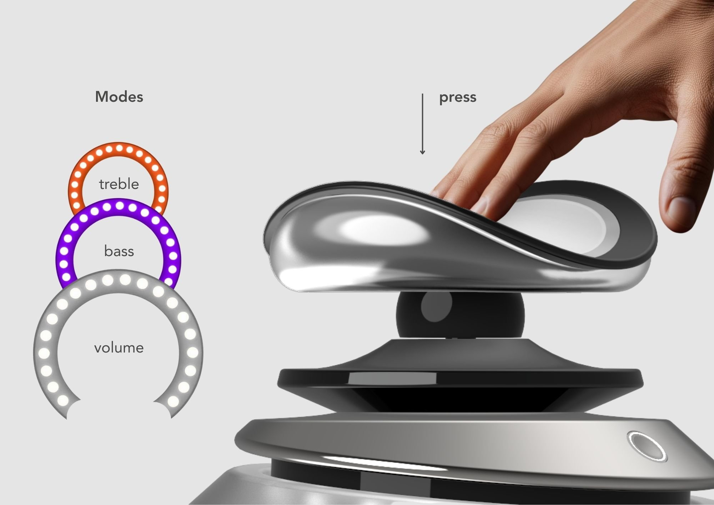
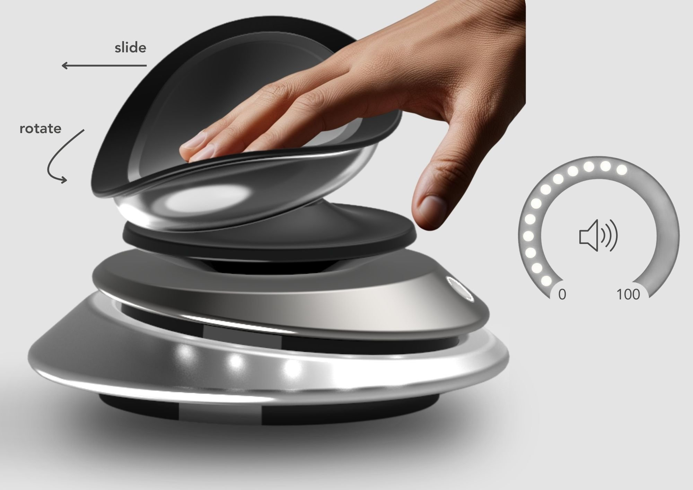
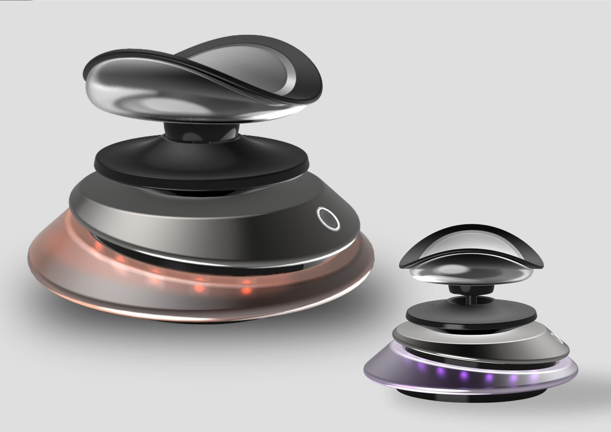
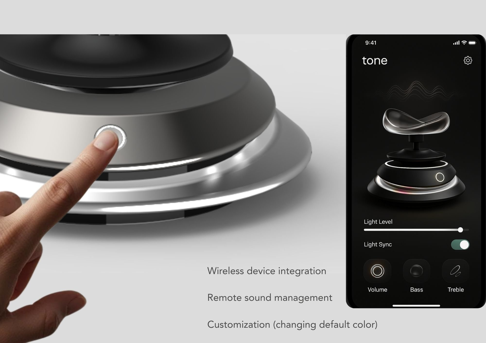

Volume
MODE 0Directs operating system master output volume across macOS (CoreAudio) and Windows (AudioEndpointVolume).
LED ColorWarm White
Hex#FFFDF0
Range0 – 100
Tone redefines audio interaction. Rather than clicking flat software sliders, Tone maps circular rotational gestures and center tap motions into real-time sound adjustments and optical NeoPixel lighting.
{"mode": "Volume", "value": "65", "r": "255", "g": "255", "b": "155"}
Tap the center button to cycle modes. The optical arc dynamically shifts color and illuminates proportionally.
Directs operating system master output volume across macOS (CoreAudio) and Windows (AudioEndpointVolume).
Low-frequency equalization profile. Enhances acoustic kick drums, bass guitar resonance, and synth sub-harmonics.
High-frequency presence control. Shapes crispness of vocals, cymbal decay, and harmonic brilliance in music tracks.
Exploded physical assembly coupled with dual-target ESP32 firmware pinouts.
| Signal | Hardware Target | Pin | Type |
|---|---|---|---|
| Joystick X | Potentiometer X | GPIO 34 |
ADC1 Analog |
| Joystick Y | Potentiometer Y | GPIO 35 |
ADC1 Analog |
| Center Push | Tactile Switch | GPIO 25 |
Digital Pull-Up |
| NeoPixel DIN | LED Ring Data | GPIO 13 |
Digital NRZ |
| Power Input | USB-C Port | 5V / 2A |
Power Rail |
# Compile firmware with PlatformIO
cd libs/ToneOS
pio run -e esp32dev
pio run -e esp32-c3-devkitm-1

Low latency GATT server implementation communicating bidirectionally with host operating systems.
Primary communications UUID advertised under device name Tone Equalizer.
12345678-1234-1234-1234-1234567890ab
Bidirectional characteristic supporting Read, Write, and Notify operations.
abcdefab-1234-1234-1234-abcdefabcdef
UTF-8 formatted JSON telemetry payload emitted upon tactile rotation.
{"mode":"Volume","value":"75","r":"255","g":"255","b":"155"}
Designed by Sezin Sözden as an Industrial Design graduation project at İzmir University of Economics (FFAD). Explores the tactile form factor, materials, user ergonomics, and optical feedback.
Tone is a compact desktop audio controller that redefines the way we interact with sound. At the heart of its design lies an elliptic-shaped control stick, enabling intuitive control over volume, bass, and treble. By rotating the control stick clockwise or counterclockwise, users can precisely adjust sound parameters, while an LED arc visually reflects the intensity level. A single press on the top switches between modes—white for volume, purple for bass, and orange for treble—providing instant visual feedback.
Tone, sesle etkileşim şeklimizi yeniden tanımlayan kompakt bir masaüstü ses denetleyicisidir. Tasarımının merkezinde, ses, bas ve tiz üzerinde sezgisel kontrol sağlayan eliptik şekilli bir kontrol çubuğu yer alır. Kontrol çubuğunu saat yönünde veya saat yönünün tersine döndürerek kullanıcılar ses parametrelerini hassas bir şekilde ayarlayabilirken, bir LED yayı yoğunluk seviyesini görsel olarak yansıtır. Üst tarafa tek bir basış, ses için beyaz, bas için mor ve tiz için turuncu modlar arasında geçiş yaparak anında görsel geri bildirim sağlar.

Tone positioned alongside a production laptop, casting a soft ambient glow onto the desk via Bluetooth wireless control.

Single push on the concave saddle switches between Treble (Orange), Bass (Purple), and Volume (White) with instant visual LED feedback.

Ergonomic palm resting contour enabling natural slide and rotational adjustments across the 0–100 radial intensity scale.

Comparison of Bass mode (deep purple) and Treble mode (vibrant orange) optical diffusion through the concealed perimeter channel.

Chassis ring button paired with the companion mobile application for lighting customization, light sync, and remote audio management.
Official Sheet DM-495 orthographic projection detailing the 205 mm base, 93.1 mm height stack, and USB-C chassis port.
Read complete technical guides directly in your browser without leaving the page.
Tone is a tactile desktop sound controller engineered to transform computer audio management. Rather than interacting with digital mixers via mice or keyboard hotkeys, Tone introduces an analog, sculpted desktop peripheral that pairs over Bluetooth 5.1 Low Energy.
cd libs/ToneTerminal
python3 -m venv venv
source venv/bin/activate
pip install -r requirements.txt
python3 main.py
Tone was conceived as an industrial design graduation project by Sezin Sözden to address the sensory disconnection in modern digital audio tools.
# Build for standard ESP32 (WROOM-32)
pio run -d libs/ToneOS -e esp32dev
# Build for ESP32-C3 (RISC-V)
pio run -d libs/ToneOS -e esp32-c3-devkitm-1
Tone uses continuous angular vector calculation (`atan2(y, x)`) to normalize thumbstick coordinates into an angle ($0^\circ - 360^\circ$). The software clamps the active adjustment sweep to $270^\circ$, dividing the active value across the 11-element LED arc.
Active LED count is computed in real time:
activePixels = round((currentValue / 100) * 11).
When switching modes, all active LEDs update immediately to the target profile's configured RGB color with zero latency.
Upon establishing connection, ToneTerminal executes an automated handshake sequence:
Tone Equalizer via BleakClient.vol:<percent> to device.0x2902.python3 libs/ToneTerminal/main.py to connect automatically.Access and download all original thesis documents, engineering drawings, booklets, and presentation boards created during the Tone project.
Detailed 1:1 orthographic drawing, cross-sections, radius dimensions, wall thicknesses, and USB-C chassis cutouts.
Complete user onboarding manual covering ergonomic hand placement, pairing steps, status indicators, and maintenance guidelines.
Comprehensive design thesis booklet including 5N1K user research, interaction sketches, acoustic mapping, and form exploration.
The full graduation portfolio folder containing deep-dive ergonomic studies, color/material/finish (CMF) palettes, and user journey maps.
Large-format graduation showcase presentation poster featuring high-definition exploded assemblies and aesthetic studio renders.
Created through interdisciplinary collaboration between industrial design and embedded software engineering.
Industrial designer who conceptualized and designed Tone as a graduation project at İzmir University of Economics (Faculty of Fine Arts & Design, 2025). Responsible for physical form factor, 5N1K user research, ergonomics, material palettes, renders, and brand identity.
Computer engineer responsible for ToneOS ESP32 embedded C++ firmware, deadzone filtering algorithms, NeoPixel optical drivers, BLE GATT server, and ToneTerminal cross-platform desktop daemon.